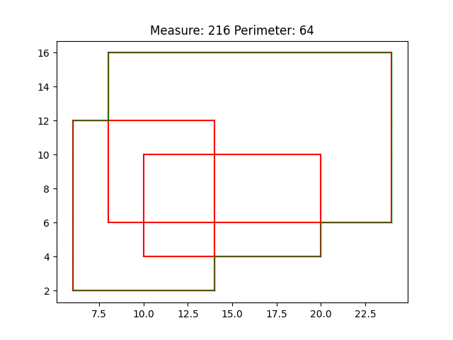
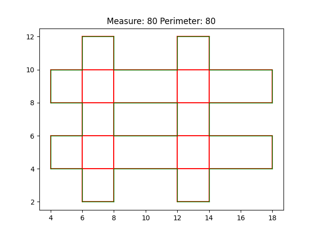

CS F364 - Design and Analysis of Algorithms - Assignment 1
Varun Parthasarathy - 2017B3A70515H
G Sathyaram - 2017B2A71335H
Siddarth Gopalakrishnan - 2017B3A71379H
Sivaraman Karthik Rangasai - 2017B4A71499H
Time Analysis of our Code
Contour Visualisations

Simple Shape Visualisation
Number of Rectangles: 3
Measure: 216
Time taken: 742 microseconds

Bars Shape Visualisation
Number of Rectangles: 4
Measure: 80
Time taken: 312 microseconds
Smiley Shape Visualisation
Number of Rectangles: 31
Measure: 121
Time taken: 2812 microseconds
Saitama Shape Visualisation
Number of Rectangles: 30
Measure: 108
Time taken: 2821 microseconds
Pikachu Shape Visualisation
Number of Rectangles: 46
Measure: 126
Time taken: 4281 microseconds
Issues in Coding
- Maintaining lower constant in Linear Complexity for Merge function.
- Generation of random testcases for stress testing and checking correctness of program.
- Careful generation of testcases for aesthetic outputs.
References
Guting, R.H. Optimal divide-and-conquer to compute measure and contour for a set of iso-rectangles.